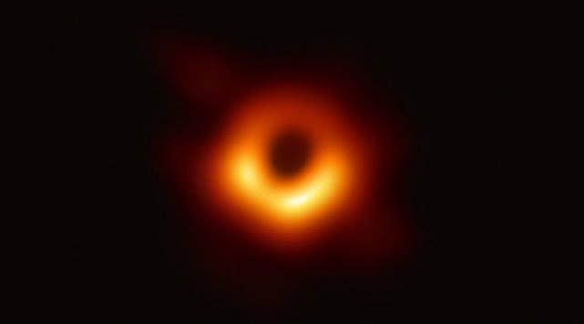

New sailing
Create the civilization of human spaceflight, forge the monument of national science and technology.
----China Aerospace Science and Technology Corporation.
Facing the future, Aerospace Science and Technology Group is building a new generation of Long March series launch vehicle type spectrum with advanced technology, cost optimization, product reliability and first-class measurement, with the idea of “modularization, combination and serialization” to continue technological innovation. With the improvement of basic capabilities and other measures to maintain the "Long March" brand image, protect the "Long March" intellectual property rights, bigger and stronger "Long March" brand, and constantly achieve a new leap in China's carrier rocket level.
Thinking about the future
"China's wisdom, China's solutions and China's strength"
Taking "Wandering Earth" as an example, he said that the story told by the film itself has a scientific background, that is, the solar system has a limited life span, and one day in the future, the sun will eventually become a red giant "swallow" the earth. So you need to ask questions: Where is the future of mankind, what should I do now? He further pointed out that this is actually the mission of manned space flight - to solve the problem of where humans will go in the future.
——Zhang Bonan, Chief Designer of the General Department of Manned Space, the Fifth Academy of China Aerospace Science and Technology Corporation
China's science fiction literature and art should not only be wary of transnational capital, but also copy and transfer the capitalist logic and contradictions on the earth to outer space. At the same time, we must also seek sci-fi theory and discourse resources rooted in China to break the existing An aesthetic paradigm constructed by 20th century modernist aesthetics. ——Sun Jiashan, China Academy of Art
look up at the starlit sky
Thoughts on the future of mankind and ultimate human thinking community with shared future for mankind

We will promote the building of a community of Shared future for mankind
The birth of the first pictures of black holes, the power of all mankind...
